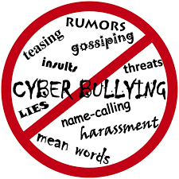
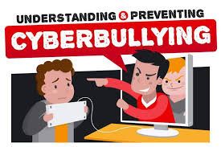

Home
About cyberbullying
In today’s world technology has a lot of benefits; however, it also comes with a negative side. It has given birth to cyberbullying. To put it simply, cyberbullying refers to the misuse of information technology to harass others.
Cyberbullying comes in various forms. It doesn’t necessarily mean hacking someone’s profiles or posing to be someone else. It also includes posting negative comments about somebody or spreading rumors to defame someone.
As everyone is caught up on the social network, it makes it very easy for anyone to misuse this access.
In other words, cyberbullying has become very common nowadays. It includes actions to manipulate, harass and defame any person.
These hostile actions are seriously damaging and can affect anyone easily and gravely. They take place on social media, public forums, and other online information websites.
Cyberbullying has become a growing problem in countries around the world.Essentially, cyberbullying doesn’t differ much from the type of bullying that many children have unfortunately grown accustomed to in school. The only difference is that it takes place online.
Cyberbullying is most commonly from the age group of 12 to 18. Child's risk of anxiety, depression, low self-esteem, or even feelings of worthlessness.


PRESS INFORMATION BUREAU - GOVERNMENT OF INDIA
UNDER THE SUPREME GUIDANCE OF SHRI. SMRITI ZUBIN IRANI, MINISTER, MINISTRY OF WOMEN & CHILD DEVELOPMENT ANNOUNCED THAT As per information provided by National Crime Records Bureau (NCRB) the total number of cases registered under Cyber Crime against Children (involving communication devices as medium/target) during 2019 was 305. As informed by NCRB, the latest data pertains to 2019.The Protection of Children from Sexual Offences (POCSO) Act had been amended in 2019 to include the definition of child pornography under Section 2(da) and punishment provided under Section 14 and Section 15 of the Act.
for more information be sure the visit the link from here